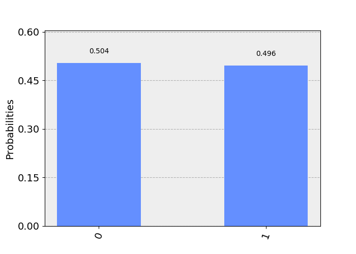

Entangle qubits
with JavaScript
Miroslav Bajtoš
Lead Node.js Engineer @ IBM
At day...

and at night →
Image courtesy of IBM Research [CC BY-ND 2.0]
A
01000001


superposition
(üá®üáø superpozice)
entanglement
(üá®üáø prov√°zanost)
Chinese satellite beats distance record for
quantum entanglement
[newscientist.com, 2017-06-15]
Now, entanglement has been preserved in pairs of photons sent by the Chinese satellite Micius to ground stations separated by 1203 kilometres — a new record.
Quantum algorithms
search: Grover
factorization: Shor
(and many more)
quantum decoherence
(üá®üáø dekohese)

Image courtesy of IBM Research [CC BY-ND 2.0]
Error
detection & correction
a reliable computer =~ 1 000 - 100 000 qubits
Current state
Hardware
- IBM: 53 qubits
- Intel: 49 qubits
- Google: 72 qubits
- Rigetti: 16 qubits

Software
- OpenQASM (assembler by IBM)
- Qiskit (IBM)
- Cirq (Google)
- ProjectQ (ETH Zürich)
- Microsoft Q#
- LIQùëàùëñ‚èê‚å™(.NET simulator)
- Quil (assembler by Rigetti)
Quantum Supremacy (?)
https://www.wired.com/story/why-googles-quantum-computing-victory-is-a-huge-deal-and-a-letdown/
The problem
Generate random numbers following a given pattern
The achievement
the quantum computer: 200 seconds
a supercomputer: 10,000 years
BUT!
verified on simpler tasks only
JavaScript & qiskit-js
üò∞
qiskit-js was abandoned recently
Current state
Example code
In Python, sorry ;-)
# setup
q = QuantumRegister(1)
c = ClassicalRegister(1)
circ = QuantumCircuit(q, c)
# build QASM
circ.h(q[0])
circ.cx(q[0], q[1])
circ.measure(q, c)
# execute
backend = BasicAer.get_backend('qasm_simulator')
job = execute(circuits, backend, shots=shots, max_credits=3)
result = job.result()
The Future
Future code
import {Grover} from '@qiskit/algorithms';
const data = [1, 2, 3, 4, 5, 6, 7, 8, 9];
const oracle = num => num % 2 === 0 && num % 5 === 2;
const algorithm = Grover(data, oracle);
const result = await algorithm.run();
The strange world of qubits
A minimal circuit
circ.measure(q, c)
Simulated results
Real results (ibmqx2)
Gate X (NOT)
circ.x(q[0])
circ.measure(q, c)
Simulated results
Real results (ibmqx2)
Energy relaxation
Hadamard Gate
(superposition)
circ.h(q[0])
circ.measure(q, c)
Simulated results
Real results (ibmqx2)
Dephasing
Bell state
(entanglement)
circ.h(q[0])
circ.cx(q[0], q[1])
circ.measure(q, c)
Simulated results
Real results (ibmqx2)
Future outlooks
More qubits
(progressing slowly)
Higher-level APIs
(implementation of standard algorithms)
New quantum algorithms
(more resilient to HW errors)
Faster solutions for
hard problems
simulations of nature/chemistry
machine learning
Co-existence with
classical computers
FPU, GPU, QPU
Adventure for next few decates
as repeatedly said for the past 20-30 years ;-)
Try it out!
IBM Q Experience
16 qubits live in Cloud, free for everyone to use
Hello Quantum
Explore the building blocks of quantum mechanics through puzzles.
Entanglion
The world’s first open source Quantum board game.
3D-print your own copy this Saturday in PrusaLab!
Image courtesy of Abhijay Achatz [CC BY-SA 2.0] https://www.flickr.com/photos/frattel/8558044789
Thank you!
slides: bajtos.net/Q